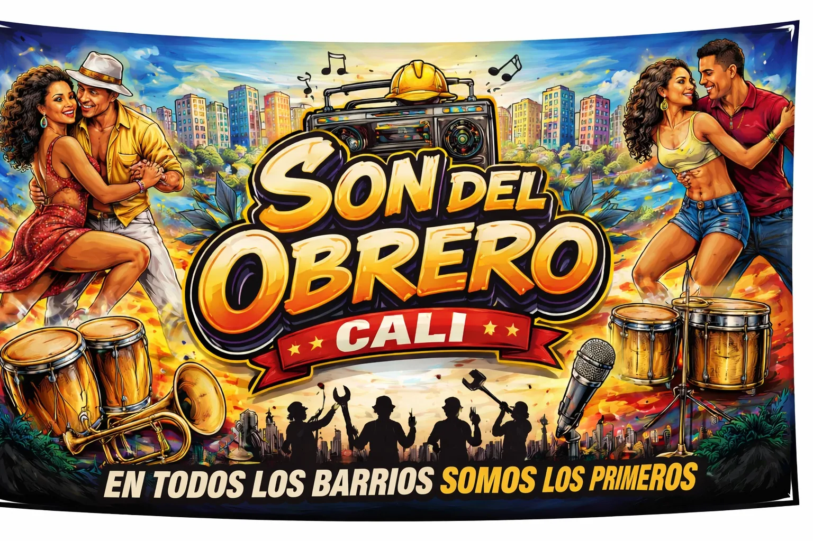
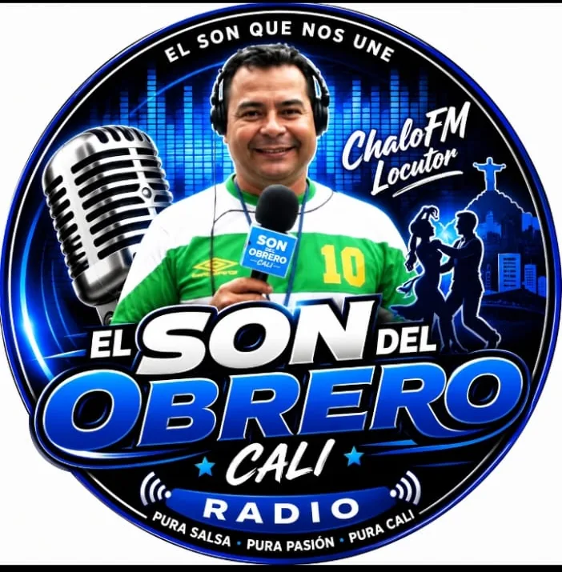

El Son del Obrero Cali
Radio de salsa en vivo • ¡Pura salsa que nos une!
Tu marca también suena aquí
Espacios listos para banners de nuestros anunciantes.
El sonido de Cali, la pasión por la salsa.
¡Bienvenidos a El Son del Obrero Cali Radio! La emisora donde la salsa se vive con pasión. Con ChaloFM Locutor disfruta de los mejores clásicos, entrevistas y la mejor programación salsera. El Son del Obrero Cali Radio... ¡el son que nos une! Pura salsa, pura pasión, pura Cali.
Conoce a nuestro locutor
Quién pone voz y sabor a la emisora.

ChaloFM
Locutor de El Son del Obrero Cali
Un apasionado de la radio y la música salsera. Con su carisma y experiencia, acompaña a los oyentes con los mejores clásicos, actualidad, entrevistas y mucho sabor caleño.
Programación
Disfruta de lo que tenemos para ofrecerte en cada programa.